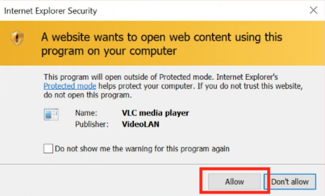

InSite Live: Follow these steps to connect to your broadcast with Internet Explorer
1. Address these special situations first:
-
In a GSA Office do not use WiFi: instead of using wireless ("WiFi") while watching, connect your computer to a docking station or network cable. If not this not possible, use Horizon VDI.
- In GSA offices watch with other employees: please view the broadcast in meeting rooms or conference rooms to limit the number of connections. If this requires using WiFi, use Horizon VDI and follow those instructions below.
- If in a field office with low bandwidth: connect your laptop to your cell phone hotspot and use the instructions "I am telworking and watching on VPN."
-
Using Google Chrome in any location: if you are using Google Chrome, please go to this page: InSite Live: Follow these steps to connect to your broadcast.
2. Click the link below based on where you are watching the video:
3. If you are given the choices of Save or Open, select Open.
4. Enjoy the broadcast!
Responding to other messages:
If a dialog with the title "Internet Explorer Security" is displayed, click "Allow".

Having Problems?
If you still have difficulty establishing a connection or viewing the video content, please contact the IT Service Desk at (866) 450-5250 or ITServiceDesk@gsa.gov.